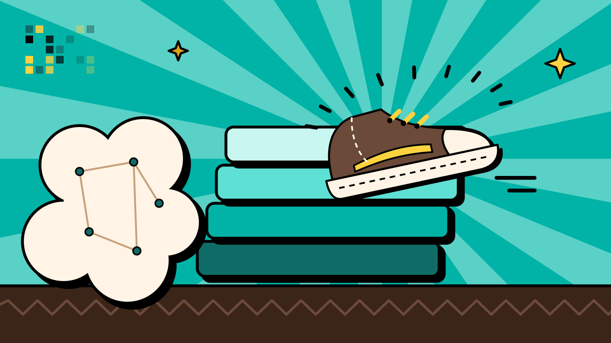

Informatietriage
Met Jev beoordeel ik nieuws en informatie: wat doet ertoe? Dat leidt tot beslissingen en actie. En actie betekent bij mij: resultaten vastleggen en communiceren.

Mijn publieke reis · tech stack
Ik ben Lennart van Bolderick. Ik vilt wol, ik ben geen programmeur. Toch bouw ik software: ik vertel wat ik wil, en een team van AI-bots doet het werk. Noem het maar vibe coding. Hier laat ik zien waarmee ik dat doe.
Stand: 28 september 2026
Alles wat ik bouw, dient een van deze drie doelen. Lees meer over mijn speerpunten →
Met Jev beoordeel ik nieuws en informatie: wat doet ertoe? Dat leidt tot beslissingen en actie. En actie betekent bij mij: resultaten vastleggen en communiceren.
Meehelpen het textielprobleem in de wereld op te lossen, met Boldwool en textiel-upcycling. Mijn stip op de horizon: van vette wol naar eindproduct in 4 uur.
Terugkerend werk laat ik door bots doen, zodat mijn tijd naar het vak en naar mensen gaat.
De kern is klein: Grok Bot, Jev, Cursor, GitHub en Telegram. Daaromheen een paar vaste hulpmiddelen.
Cloud agents schrijven echte code, op een aparte branch, en openen een pull request. Niets gaat live zonder mijn go.
Hier staat de code. Met GitHub Pages publiceer ik openbare pagina's, zoals deze.
Mijn enige chatkanaal naar de bots. Eén plek, één gesprek.
Geen WhatsApp, geen Slack als kanaal voor de bots. De bots praten met mij via Telegram, en verder niet.
Persoonlijk contact doe ik zelf. Als ik je dit linkje via WhatsApp stuur, dan ben ik dat, geen bot. Dat is mijn slotgracht: het menselijke deel blijft van mij.